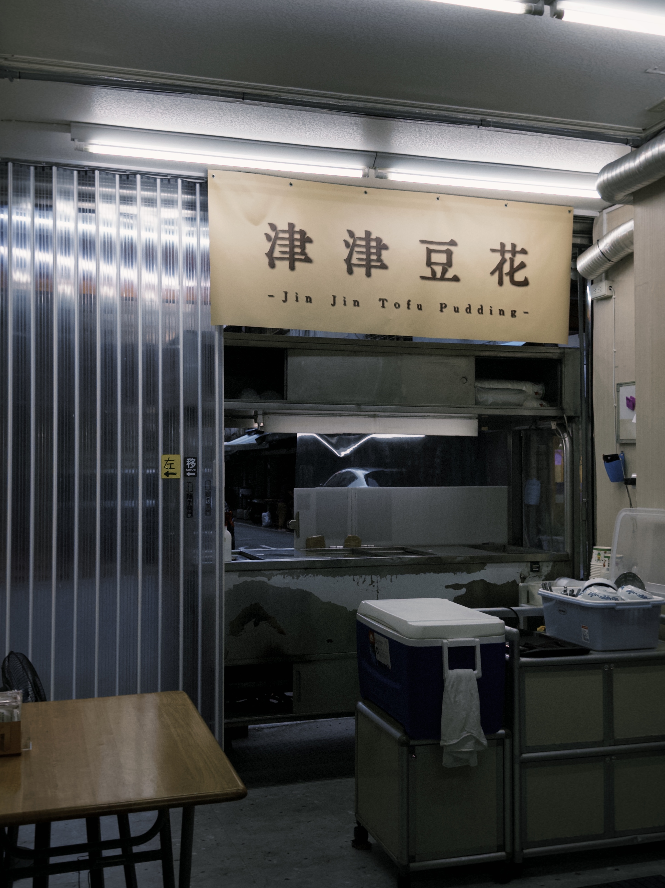

我們的故事
津津豆花創立於 2001 年，隱身於充滿人情味的巷弄中。二十多年來，我們深信真正的美味來自於對細節的堅持與純粹的原料。
為了將最新鮮、最純粹的豆香送到您手中，我們堅持每天早晨手工製作，早上十點拉開鐵門營業，只為保留豆花最完美的口感。
本店全面採用「非基因改造黃豆」，製作過程絕不添加任何防腐劑與人工香料。每一口綿密的豆花，都是歲月淬鍊下的職人手藝，也是我們對您健康與品質的無聲承諾。

最新消息
2026.04.01
津津豆花官方網站正式上線！